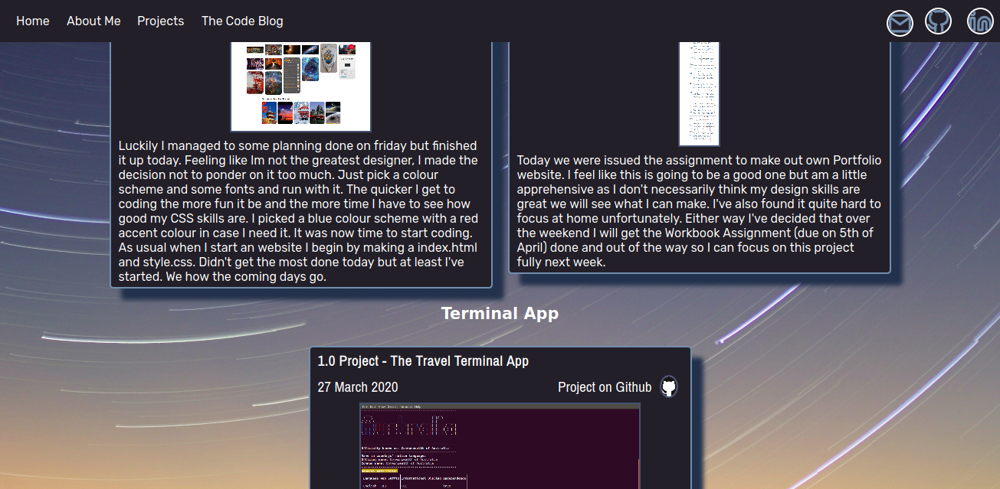
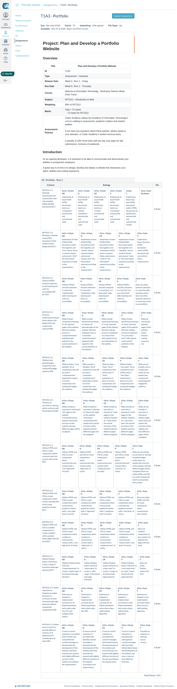

1.0.0 - Code - Completed

Final day is here. Assignment due tonight at 10pm. Managed to finish most of the coding yesterday, just a bunch of documentation to do and SRI and accesibility audit and forms. The point is too much to do that i don't have time to write here atm.
0.1.0 - Bug/Code - Position:fixed and Deployed

BUG - I finally fixed that bug that has been bothering me for so
long. I just couldn't get my navigation to stay fixed. Well the
solution was simple and I'm just an idiot. Fixed is a position
attribute not display. Felt dumb and kinda relieved at the same time
when I realised it. CODE - Today has been super productive and I'm
starting to feel good about my project. It still isn't a master
piece in terms of design but It's becoming really responsive.
Harrison (my teacher from Coder Academy) told me about a way you
could get a on click equivalent using CSS which was awesome. This in
turn let me do the pop up contact window I've been wanting. Also it
kept the CSS no JS dream alive. Don't forsee any really reason I
would need JS now. I finally uploaded the project to the web. I
guess you could say it has gone from alpha to beta. It's not
finished and still feel like there is a ton left to do but I'm
getting there.
0.0.2 - Code - Planning and Coding

Luckily I managed to some planning done on friday but finished it up
today. Feeling like Im not the greatest designer, I made the
decision not to ponder on it too much. Just pick a colour scheme and
some fonts and run with it. The quicker I get to coding the more fun
it be and the more time I have to see how good my CSS skills are. I
picked a blue colour scheme with a red accent colour in case I need
it. It was now time to start coding. As usual when I start an
website I begin by making a index.html and style.css. Didn't get the
most done today but at least I've started. We will see how the coming days go.
0.0.1 Project - Portfolio Project Introduction

Today we were issued the assignment to make out own Portfolio
website. I feel like this is going to be a good one but am a little
apprehensive as I don't necessarily think my design skills are great
we will see what I can make. I've also found it quite hard to focus
at home unfortunately. Either way I've decided that over the weekend
I will get the Workbook Assignment (due on 5th of April) done and
out of the way so I can focus on this project fully next week.